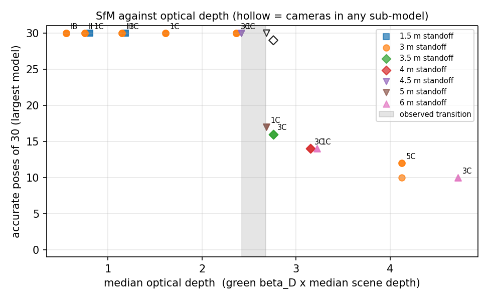
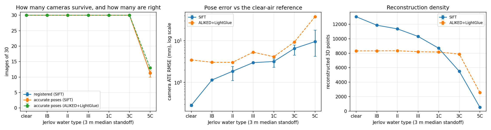

One frame at a 3 m median standoff: clear air, then Jerlov IB, II, III, 1C, 3C and 5C.
Question
When does off-the-shelf structure-from-motion stop recovering camera poses underwater, and what controls it?
For a camera-based underwater mapper, the answer decides whether cameras can carry the map at a given
water clarity and standoff, so it is worth measuring rather than guessing.
Approach
Scene: COLMAP's public south-building photos (30 frames, 1600×1200). A clear-air COLMAP run is the reference.
Range: DPT-SwinV2 monocular depth fitted to the reference reconstruction (82% inliers, 2.7% median depth error), with one global scale so every view agrees on range.
Water: spectral rendering from measured absorption and scattering of six Jerlov water types (Williamson & Hollins 2022): direct attenuation with beam attenuation c = a + b, small-angle forward scatter and single-scattering veiling light.
Camera: auto-exposure gain, Poisson shot noise, read noise, 8-bit sRGB and JPEG.
Scoring: COLMAP 4.0.4 with SIFT on every image set, plus ALIKED + LightGlue on the 3 m water-type sweep (one seed); camera poses aligned to the reference (Umeyama) and counted as accurate within 10 cm and 2°. 64 seeded runs on a laptop CPU.
Key Results
τ ≤ 2.4
One complete map: all 30 cameras within 25 mm (SIFT, baseline sensor, uncorrected)
τ ≈ 2.7
Map splits into two sub-models
τ ≥ 3.2
Cameras lost: 10–14 of 30 kept
62 / 63
Scored runs with every camera in the largest model within 10 cm and 2°
τ is the median optical depth: the green-channel attenuation coefficient times the median scene depth.
Three regimes, ordered by optical depth. Water type and range combine into one axis. That part is expected, since range enters the model only through c·r; what the study measures is where the transition sits and what moves it.
The transition is not a constant. Four times the photon budget brings 1C at 5 m back to one complete map; a quarter drops 3C at 3 m to 14 cameras; 10× the veiling light splits 3C at 3 m. Treat τ ≈ 2.4 as an optimistic bound for this sensor.
SfM fails by fragmenting, not by getting poses wrong. In 62 of 63 scored runs, every camera in the largest model is within 10 cm and 2° of the reference.
Color correction does not move the transition. At 5C: uncorrected 10–12 cameras, white balance 11–12, Sea-thru with estimated parameters 12, an oracle that knows the true water 13. Once noise swamps the detail, re-coloring cannot bring it back.
Learned features keep more structure, not more cameras. ALIKED + LightGlue keeps 7.9k points at 3C and 2.6k at 5C (SIFT: 5.5k and 0.5k) and 14 cameras at 5C (SIFT: 10–12), at about 6× the CPU time.

Accurate poses in the largest model against optical depth, every uncorrected SIFT run at baseline sensor settings. Hollow markers count cameras in any sub-model; the grey band is the observed transition.
Water-Type Sweep
SIFT, 3 m median standoff, 3 seeds (clear air: 2 replicates; mean, with min–max where runs differ).
Water
Cameras in largest model /30
Camera ATE RMSE (mm)
3D points
Exposure gain
Clear air
30
0.3
13,044
1.0×
IB open ocean
30
1.1
11,871
2.5×
II
30
1.9 (1.1–2.4)
11,365
3.1×
III turbid open ocean
30
3.0
10,321
4.7×
1C clearest coastal
30
3.2 (2.3–3.7)
8,691
7.0×
3C coastal
30
6.5 (4.5–7.9)
5,493
13.5×
5C turbid coastal
11 (10–12)
9.6 (4.2–18.1)
515
43.8×

Cameras kept, pose error (log scale) and 3D points against water type, SIFT vs. ALIKED + LightGlue.
Limitations
One scene, and it isn't a hull. A textured building favors feature matching; low-texture painted hulls will break earlier.
Ambient light only. Vehicle lights change both the signal and the backscatter geometry.
Simplified scattering. Single-scattering veiling light with no multiple scattering is probably too weak, which is why the sensitivity runs matter.
The sensor model sets the numbers. A bigger sensor or longer exposure moves the transition to larger τ.
No real underwater validation yet, and 2–3 seeds per condition (1 for the ALIKED and sensitivity runs).
How It Was Built
Resumable study runner; every stage reproduces from the repo with make (data download with checksums, depth, study, plots, viewer).
Unit tests on the optics and scoring code, run in CI on GitHub Actions.
v1 → v2: v1 attenuated light with the diffuse coefficient Kd instead of beam attenuation and had no sensor noise, which understated degradation and made depth-aware color correction look like it recovered the map. v2 fixed both, and the repo's WRITEUP.md lists everything that changed.
Public data only: COLMAP's south-building images and published water optics.
Next Steps
Validate against real underwater footage with ground-truth trajectories (FLSea, AQUALOC).
Multiple-scattering path radiance and vehicle-mounted lighting.